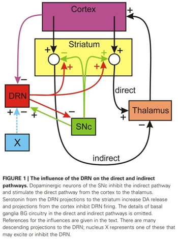

Computational Studies of the Role of Serotonin in the Basal Ganglia
Feb 17, 2021 | 2 min read

Feb 17, 2021 | 2 min read
The basal ganglia is one of the most important dopaminergic centres of the brain. It is responsible for a wide range of functions,
including action selection and motor learning. The basal ganglia is known to perform its functions of action selection, through a
GEN(Go, Exploration, No-Go) paradigm which is based on reinforcement learning. Basically, the D1 pathway or the direct pathway, is
responsible for carrying out a movement, and the D2 pathway or the indirect pathway is responsible for inhibiting a movement. The
D2 pathway is also responsible for exploration of different actions in any situation, through the STN-GPe interactions.
In a major neurodegenerative disorder called Parkinsons' disease, these pathways are hampered due to the lack of dopaminergic
neurons in the Substantia Nigra(SNc). This causes the indirect pathway to be inhibited less and the direct pathway to be excited
less, which leads to the chief symptoms of bradykinesia(slowness of movement), tremors etc.
A prevalent treatment option for Parkinson's disease is Levadopa, which is the precursor to dopamine. Levadopa, upon
decarboxylation can increase dopamine levels in the striatum and act as a compensatory mechanism for the rapid degeneration of SNc
neurons.
However this treatment has its own share of issues, since Levadopa has been known to induce dyskinesia(due to excessive dopamine
release). It is also known to induce serotonin depletion, due to the hijack of serotonergic neurons by Levadopa, which in turn start
producing dopamine.
This paper aims at understanding how the brain in itself has robust mechanisms to maintain homeostasis of the various basal ganglia
pathways via serotonergic neurons.

The researchers performed a myriad of simulations by changing various parameters in the model(details of which are available in the
appendix). This was done to replicate pathological conditions and observe how the model was behaving in response to them.
To simulate Parkinsonian conditions, they decreased the firing rate of the SNc neurons, and observed that even though the direct
pathway was less stimulated, and the indirect pathway was less inhibited, the magnitude of the change was far less than they
expected. They attributed this to the Serotonergic system of modulation, which can be explained as follows: once the SNc neurons
are less active, the direct pathway is less stimulated, and the indirect pathway is less inhibited. This in turn inhibits the
thalamus from stimulating the motor cortex, and thereby disinhibits the Dorsal Raphe Nucleus(DRN)—a major hub of serotonergic
neurons. This causes more release of Serotonin(5-HT) in the striatum which supplements the function of dopamine and compensates
for the low firing rate of SNc neurons.
To simulate the role of Selective Serotonin Reuptake Inhibitors(SSRIs) in the Basal Ganglia circuitry, they increased the level of
5-HT in the striatum. This caused a decrease in the firing rate of DRN, to maintain stability of serotonin levels. This function
is physiologically carried out by 5HT autoreceptors, which increase the activity of the DRN, if extracellular 5-HT levels are low
and decrease the activity of DRN if extracellular 5-HT levels are high.
To simulate the role of Deep Brain Simulation as a therapeutic measure for Parkinsons' disease. The decay constant of the SNc
neurons was decreased by half, this led to a decrease in the firing rate of the DRN neurons, which can have correlations with the
transient acute depression seen in some patients after DBS of SNc neurons.
The paper, in a very simplistic way, discussed how the DRN is responsible for modulating the activity of the direct/indirect
pathway of the Basal Ganglia, and how 5-HT neurons along with the Dopaminergic neurons might also have an important role to play in
Parkinson's disease.

Oct 28, 2020 | 2 min read